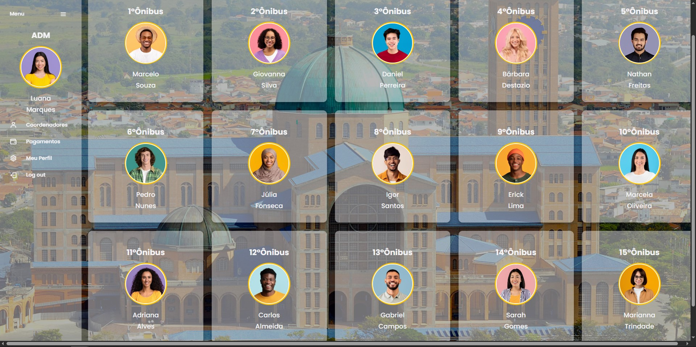
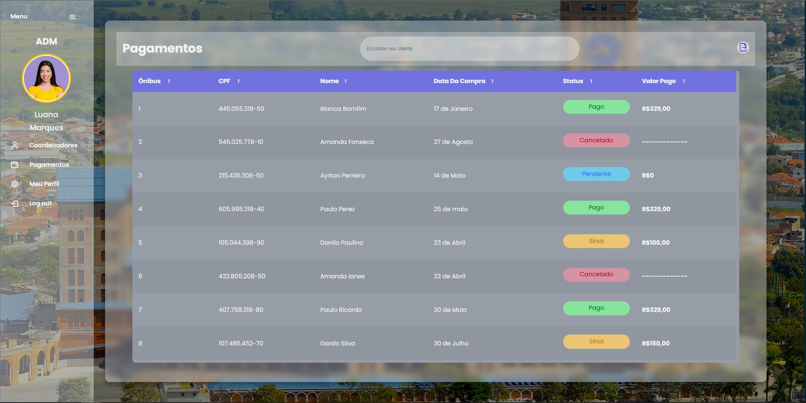
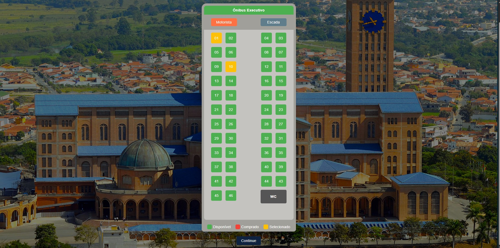

Aparecida do Norte.
Sistema de gestão prática e eficiente para viagens paroquiais a Aparecida do Norte.
Descrição do Projeto
O Sistema de Viagens para Aparecida do Norte foi desenvolvido para modernizar a organização de romarias paroquiais. A plataforma permite que fiéis escolham seus coordenadores, gerenciem reservas de assentos em tempo real e acompanhem registros de pagamentos, automatizando processos que antes eram manuais e propensos a erros.
Minha Participação
Fui responsável por toda a implementação do front-end e design de interface. Desenvolvi as telas em código utilizando tecnologias fundamentais da web, focando em uma experiência de uso intuitiva tanto para os administradores quanto para os usuários. Também realizei o protótipo visual no Figma para definição da identidade visual e fluxo de navegação.
Links do Projeto
Funcionalidades Principais
- Gestão de Coordenadores: Seleção personalizada de guias de viagem.
- Mapa de Assentos: Controle visual de vagas disponíveis no ônibus.
- Painel Financeiro: Registro e controle simplificado de pagamentos efetuados.
- Fluxo Intuitivo: Interface moderna projetada para facilitar a navegação.
Screenshots do Projeto


